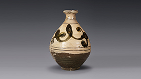
분청사기철화 초문 병
조선, 16세기 / 점토『粘土』
전시중 - [M1, 3F]
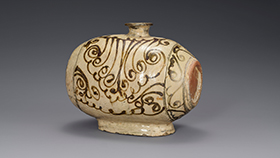
분청사기철화 초화문 장군
조선, 16세기 / 점토『粘土』
전시중 - [M1, 3F]
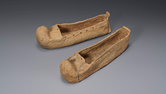
신발모양 토기
가야, 4-5세기 / 점토『粘土』 / 보물
전시중 - [M1, 1F]
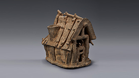
집모양 토기
가야, 4-5세기 / 점토『粘土』
전시중 - [M1, 1F]
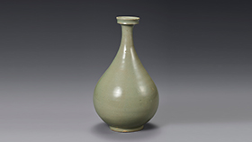
청자 병
고려, 11-12세기 / 점토『粘土』
전시중 - [M1, 4F]
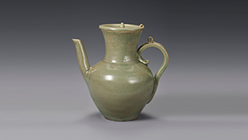
청자 유개주자
고려, 12세기 / 점토『粘土』
전시중 - [M1, 4F]
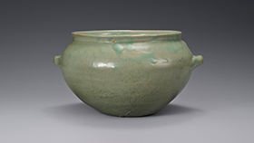
청자 이부호
고려, 12세기 / 점토『粘土』
전시중 - [M1, 4F]
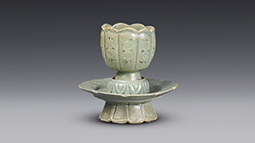
청자 잔 / 잔탁
고려, 11-12세기 / 점토『粘土』
전시중 - [M1, 4F]
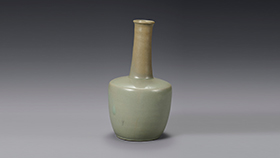
청자 장경병
고려, 12세기 / 점토『粘土』
전시중 - [M1, 4F]
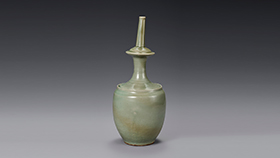
청자 정병
고려, 12세기 / 점토『粘土』
전시중 - [M1, 4F]
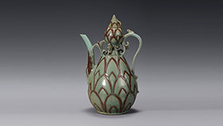
청자동채 연화문 표형 주자
고려, 13세기 / 점토『粘土』 / 국보
전시중 - [M1, 4F]
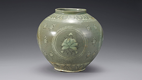
청자상감 국화모란문 호
고려, 13세기 / 점토『粘土』
전시중 - [M1, 4F]
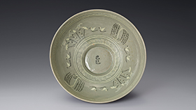
청자상감 기사명 포류수금문 대접
고려, 1329년 / 점토『粘土』
전시중 - [M1, 4F]
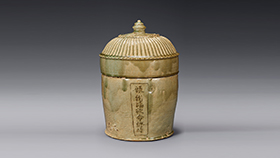
청자상감 발원문명 골호
고려, 12세기 / 점토『粘土』
전시중 - [M1, 4F]
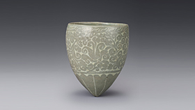
청자상감 보상화당초문 잔
고려, 12세기 / 점토『粘土』
전시중 - [M1, 4F]
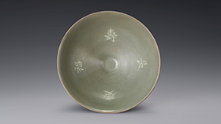
청자상감 수복장경명 완
고려, 12세기 / 점토『粘土』
전시중 - [M1, 4F]